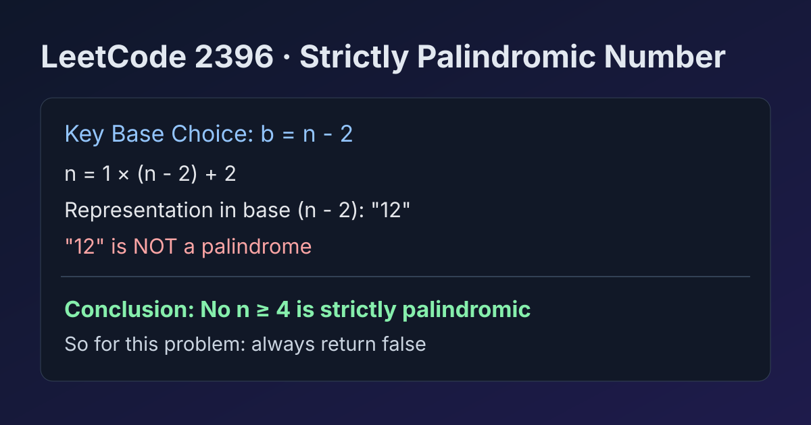

LeetCode 2396: Strictly Palindromic Number (Base Conversion Contradiction Proof)
LeetCode 2396MathProofToday we solve LeetCode 2396 - Strictly Palindromic Number.
Source: https://leetcode.com/problems/strictly-palindromic-number/

English
Problem Summary
An integer n is called strictly palindromic if for every base b in [2, n - 2], the representation of n in base b is a palindrome. Return whether n is strictly palindromic.
Key Insight
For any n >= 4, pick base b = n - 2. Then:
n = 1 * (n - 2) + 2, so in base n - 2 the digits are exactly 12. The string "12" is never a palindrome.
So no n >= 4 can be strictly palindromic. Under problem constraints, answer is always false.
Algorithm
- Directly return false.
Complexity Analysis
Time: O(1).
Space: O(1).
Common Pitfalls
- Trying to brute-force all bases and perform full conversions (unnecessary).
- Missing the specific base n-2 contradiction.
- Overthinking edge cases despite theorem proving impossibility.
Reference Implementations (Java / Go / C++ / Python / JavaScript)
class Solution {
public boolean isStrictlyPalindromic(int n) {
return false;
}
}func isStrictlyPalindromic(n int) bool {
return false
}class Solution {
public:
bool isStrictlyPalindromic(int n) {
return false;
}
};class Solution:
def isStrictlyPalindromic(self, n: int) -> bool:
return Falsevar isStrictlyPalindromic = function(n) {
return false;
};中文
题目概述
如果整数 n 在所有进制 b ∈ [2, n-2] 下的表示都为回文串，则称 n 是“严格回文数”。需要判断给定 n 是否满足该条件。
核心思路
对任意 n >= 4，只看一个关键进制：b = n - 2。
此时 n = 1 * (n - 2) + 2，因此在 n-2 进制中的表示必定是 12，显然不是回文。
所以不存在满足条件的 n（在题目约束范围内），答案恒为 false。
算法步骤
- 直接返回 false。
复杂度分析
时间复杂度：O(1)。
空间复杂度：O(1)。
常见陷阱
- 逐个进制暴力转换并判断回文，代码冗长且多余。
- 没抓住 n-2 进制这一击必杀反例。
- 把这题当实现题而忽视其“证明题”本质。
多语言参考实现（Java / Go / C++ / Python / JavaScript）
class Solution {
public boolean isStrictlyPalindromic(int n) {
return false;
}
}func isStrictlyPalindromic(n int) bool {
return false
}class Solution {
public:
bool isStrictlyPalindromic(int n) {
return false;
}
};class Solution:
def isStrictlyPalindromic(self, n: int) -> bool:
return Falsevar isStrictlyPalindromic = function(n) {
return false;
};
Comments